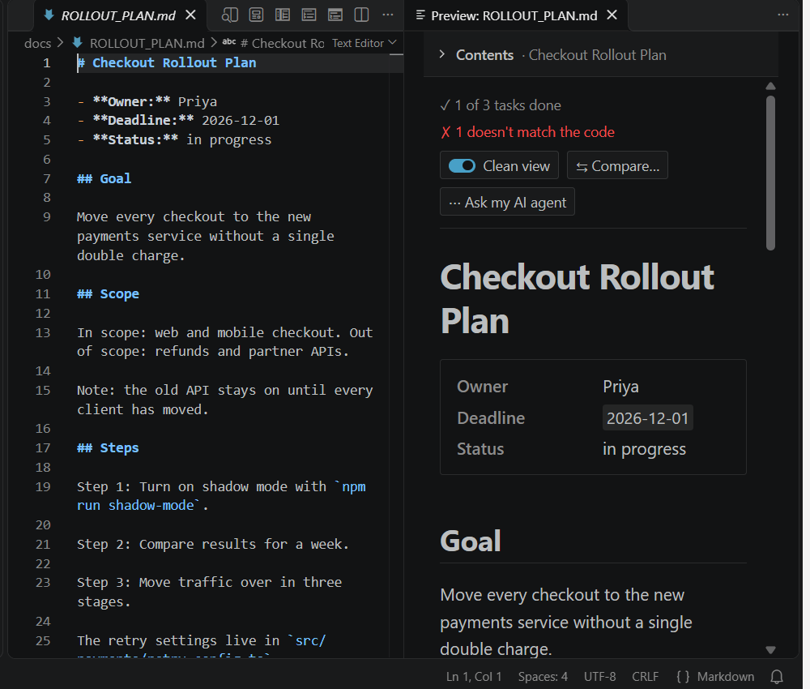
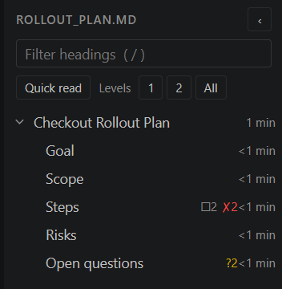
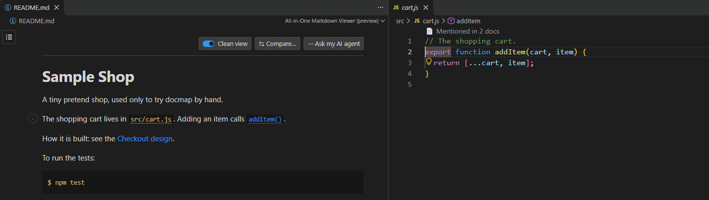
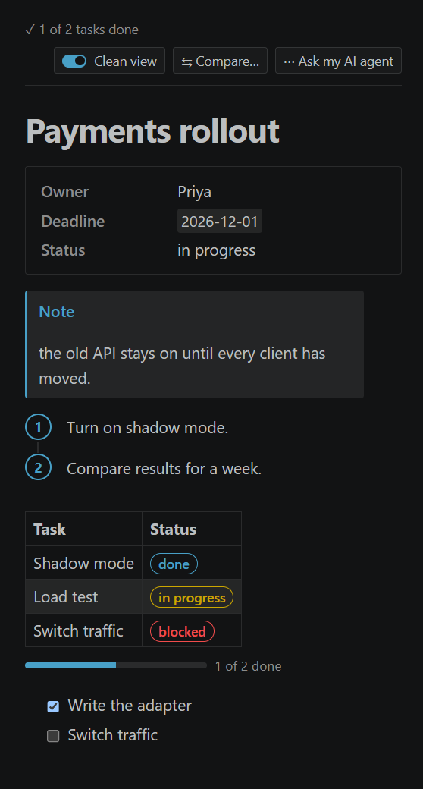
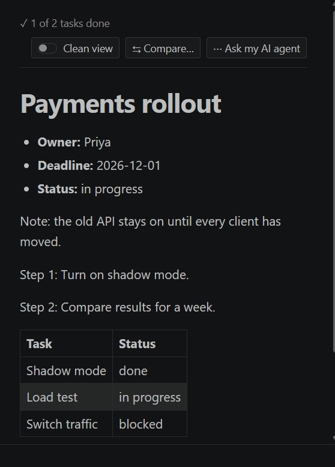
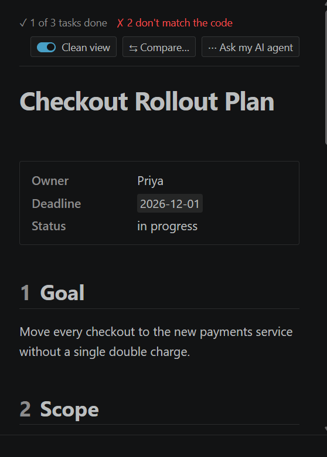
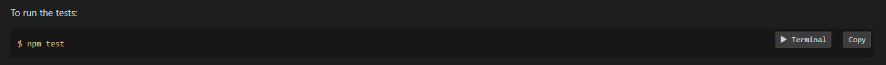
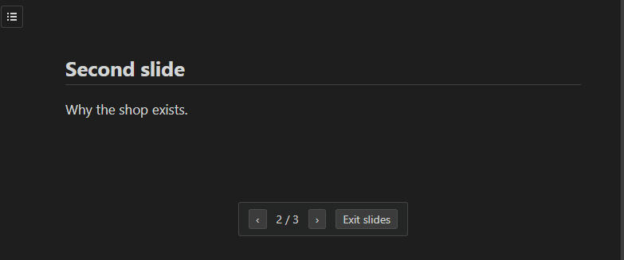
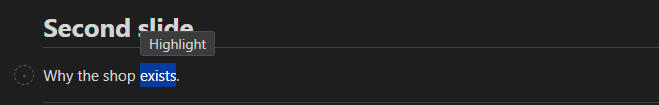
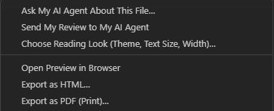

Reading your docs
Turn any .md file into a clean page you can read, skim and share.
- See the page
- Side by side
- Long docs
- Click code names
- Clean view
- As written
- Tick tasks
- Diagrams
- Reading look
- Heading numbers
- ▶ Terminal
- Slides
- Highlight
- In your browser
- HTML or PDF
-
See the page instead of the code
“My
.mdfile looks like code, full of # and * marks.”Show Preview turns it into a clean page in the same tab, with a clickable outline on the left.
Where: press Ctrl+Alt+V (Mac: Cmd+Alt+V), or Show Preview at the top right of the editor. Press again to go back to the text.

-
Open the page beside the text
“I'm writing a doc and want to see the result as I type.”
Open Preview to the Side: your text on the left, the page on the right, updating as you type.
Where: top right of the editor, next to Show Preview.

-
Find your way in a long doc
“A 40-page spec, and I only need one section.”
The outline lists every heading with its reading time. Quick read shows only the first line of each section.
Where: the left side of the page. Keys: s quick read, / filter headings, 1 2 3 heading levels.

-
Click a file or function name next update
“The doc says
src/cart.js. Now I have to go and find it.”File names, functions and classes in the doc are links: click one and the code opens beside the page, at that line. A dotted underline shows which ones; only names your project really has.
Where: on the page, in any doc. Also works for
file:line, likesrc/cart.js:2.
-
Clean view for AI-written docs
“The AI's plan is a wall of bullets, labels and status words.”
Clean view lays it out: owner cards, note boxes, numbered steps, coloured statuses. Your file is not changed.
Where: on by default. The Clean view switch at the top of the page.

-
Show the doc exactly as written
“How will this look on GitHub?”
Turn Clean view off to see the doc exactly as written.
Where: the Clean view switch at the top of the page.

-
Tick tasks and change statuses
“Updating the plan means hunting for the right line in the text.”
Click a task box or a status label on the page. docmap changes just that line and saves it.
Where: the task boxes and coloured labels on the page.

-
Diagrams
“A flow is easier to see than to read.”
Blocks marked
mermaidare drawn as diagrams on the page.Where: automatic on the page.

-
Choose Reading Look
“Long reading sessions tire my eyes.”
Pick a theme (Paper, GitHub, Night, Focus), a text size and a line width.
Where: the ⋯ at the top right of the editor tab → Choose Reading Look.

-
Number the headings
“In a meeting, I want to say ‘see 2.3’.”
Show 1, 1.1, 1.2 … before the headings on the page, without typing numbers into the file.
Where: Settings (Ctrl+,) → search docmap heading numbers.

-
▶ Terminal on command blocks next update
“The setup guide says to run a command. I copy, switch, paste…”
Click ▶ Terminal on a command block: the command is typed into VS Code's terminal for you. It never runs by itself; you press Enter when you're ready.
Where: point at a command block on the page (shell, PowerShell, console); the button sits next to Copy.

-
Slides
“A quick team update shouldn't need a slide deck.”
Split sections with a
---line and play the doc as slides. ← → to move, Esc to stop.Where: ⋯ Ask my AI agent at the top of the page → Show as slides. No AI is used.

-
Highlight text
“I want to come back to this sentence later.”
Select text on the page → Highlight. Saved on your computer, never in the file.
Where: select any text on the page.

-
Open Preview in Browser
“I want to read on a second screen, or show the doc on a call.”
Opens the page in your web browser. It follows your edits as you type, and only your computer can see it.
Where: the ⋯ at the top right of the editor tab → Open Preview in Browser.

-
Export as HTML or PDF
“My colleague doesn't use VS Code.”
Save the page as one HTML file anyone can open, or print it to PDF.
Where: the ⋯ at the top right of the editor tab → Export as HTML… or Export as PDF (Print)…
Want step-by-step examples to try? In VS Code press Ctrl+Shift+P and run Help (All Features).